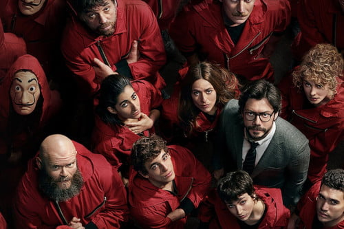
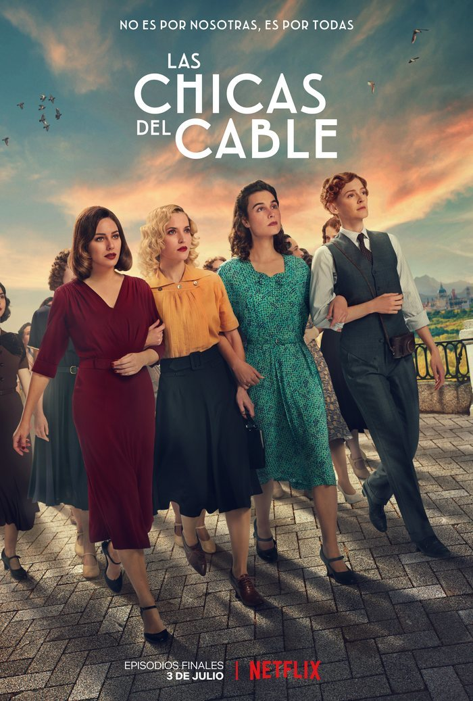
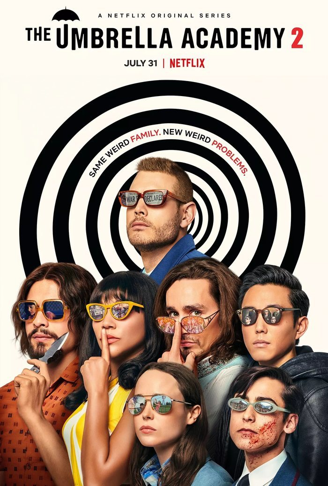

Netflix
Netflix, Inc. es una empresa de entretenimiento y un servicio por suscripción estadounidense que opera a nivel mundial y cuyo servicio principal es la distribución de contenidos audiovisuales a través de una plataforma en línea o servicio de video bajo demanda por streaming.
¿Buscas las películas y los programas en boca de todo el mundo? Están en Netflix.
Tenemos series, películas, especiales de stand up y documentales premiados.
¿Qué es lo que más te gustará de Netflix?

Una banda organizada de ladrones se propone cometer el atraco del siglo en la Fábrica Nacional de Moneda y Timbre. Cinco meses de preparación quedarán reducidos a once días para poder llevar a cabo con éxito el gran golpe.
La casa de papel es una serie de televisión española creada por Álex Pina, producida por Atresmedia en sus inicios, aunque posteriormente por Netflix. Protagonizada por Úrsula Corberó, Itziar Ituño y Álvaro Morte, se presentó en el III Festival de Televisión de Primavera en Burgos en marzo de 2017 y el 2 de mayo de ese mismo año se estrenó en la cadena española Antena 3. Esta cadena distribuyó las dos primeras partes de la serie en España antes de que Netflix la adquiriera a finales de 2017 y la editase, reeditase y distribuyese las dos partes por todo el mundo.

Justo antes del crash del 29 se abre en Madrid la primera empresa nacional de teléfonos. Muchas mujeres esperan conseguir allí un trabajo que no solo representara una ocupación sino progreso y modernidad en esa época.
Las chicas del cable es la primera serie original de Netflix producida en España. Está protagonizada por Blanca Suárez, Yon González, Maggie Civantos, Ana Fernández, Nadia de Santiago, Martiño Rivas, Ana Polvorosa y Nico Romero. La serie fue creada por Ramón Campos, Gema Neira y Teresa Fernández. Se estrenó mundialmente el 28 de abril de 2017. El 25 de diciembre tuvo lugar la segunda temporada y el 7 de septiembre de 20181 la tercera.

Una familia disfuncional de superhéroes se reúne para resolver el misterio de la muerte de su padre y la amenaza del apocalipsis.
The Umbrella Academy es una serie de televisión de superhéroes estadounidense de 2019, desarrollada por Steve Blackman para Netflix. Es una adaptación de la serie de cómics homónima escrita por Gerard Way desde 2007 y publicada por Dark Horse Comics. Su primera temporada, que adapta las series limitadas Apocalypse suite y Dallas,1 se estrenó el 15 de febrero de 2019. En abril de 2019, la serie se renovó para una segunda temporada que se estrenó el 31 de julio del 2020. En noviembre de 2020, Netflix renovó la serie para una tercera temporada.

Cuando un niño desaparece, sus amigos, la familia y la policía se ven envueltos en una serie de eventos misteriosos al tratar de encontrarlo. Su ausencia coincide con el avistamiento de una criatura terrorífica y la aparición de una extraña niña.
Stranger Things es una serie de televisión web estadounidense de suspenso y ciencia ficción coproducida y distribuida por Netflix.3 Escrita y dirigida por los hermanos Matt y Ross Duffer y producida ejecutivamente por Shawn Levy,4 fue estrenada en la plataforma Netflix el 15 de julio de 2016, con críticas positivas por parte de la prensa especializada, quienes elogiaron la interpretación, caracterización, ritmo, atmósfera y el claro homenaje al Hollywood de la década de 1980, con referencias a películas de Steven Spielberg,5 Wes Craven,6 John Carpenter,7 Stephen King,8 Rob Reiner9 y George Lucas, entre otros, incluyendo varias películas, anime y videojuegos.10